#4
ottobre 2024
L’esperimento si compone di 10 round, in ciascuno dei quali dovrai prendere in autonomia una decisione.
Sarai assegnato casualmente a un gruppo di quattro persone.
Farai parte dello stesso gruppo per tutta la durata dell’esperimento, senza conoscere l’identità degli altri tre membri.
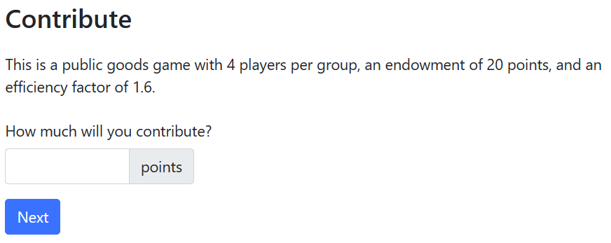
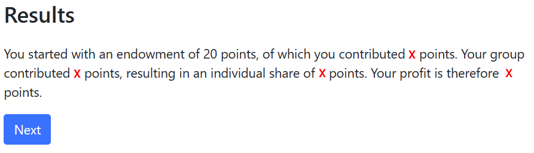
\[ \left( 20 -\text{tua contribuzione} \right) + 0.4 \times \text{contribuzione complessiva} \]
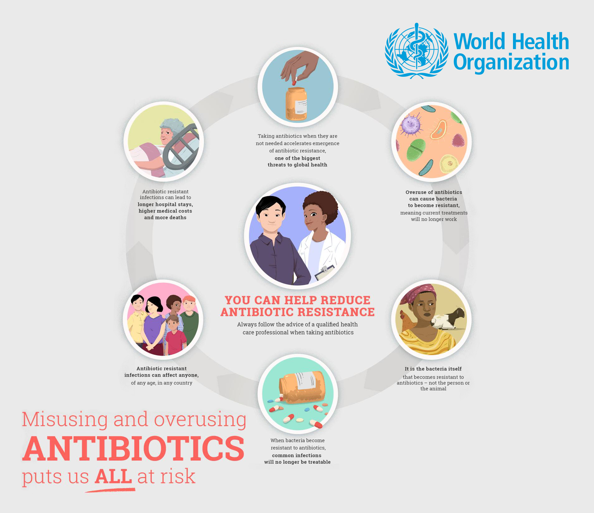
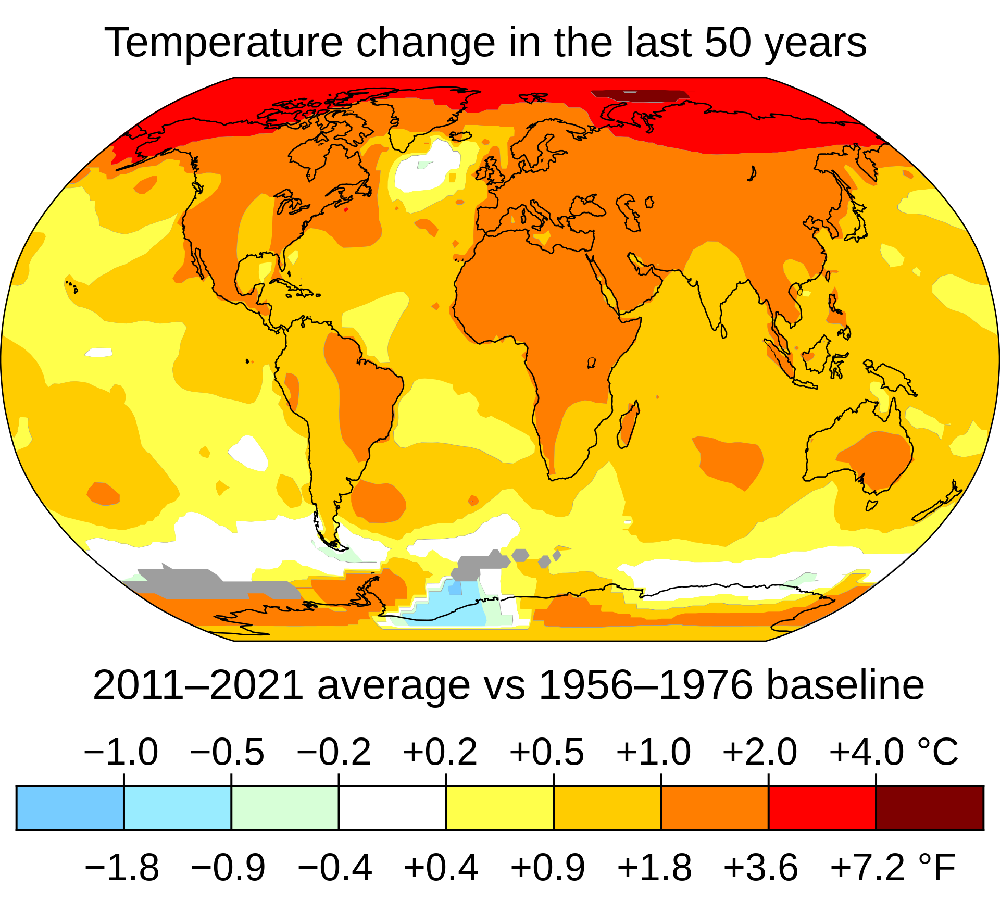
Dilemma sociale
Situazione in cui gli individui, nel perseguimento dei propri obiettivi individuali, intraprendono autonomamente delle azioni che portano a un risultato peggiore di quello che si sarebbe potuto realizzare se si fossero accordati su come agire o avessero ragionato in termini di gruppo anziché pensare unicamente a sé.
Interazione strategica
Interazione nella quale gli agenti coinvolti sono consapevoli che il proprio comportamento avrà consequenze sul benessere altrui e le azioni altrui avranno conseguenze sul prioprio benessere.
La nostra storia
Alice e Bruno sono produttori di vino nel Chianti.
Ciascuno dei due deve decidere come affrontare i parassiti invasivi che minacciano i loro vigneti.
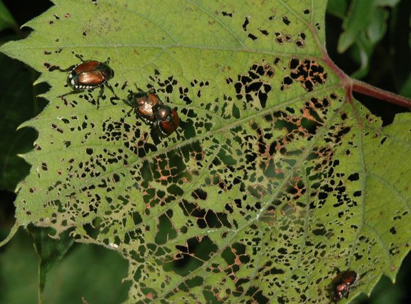
Ciascuno dei due agenti prende la propria decisione senza conoscere la decisione dell’altro.
Se un solo agricoltore sceglie Terminator, il danno alle falde acquifere è limitato. Se invece lo scelgono entrambi, la contaminazione dell’acqua diventa un problema serio e i due devono acquistare un costoso sistema di filtraggio.
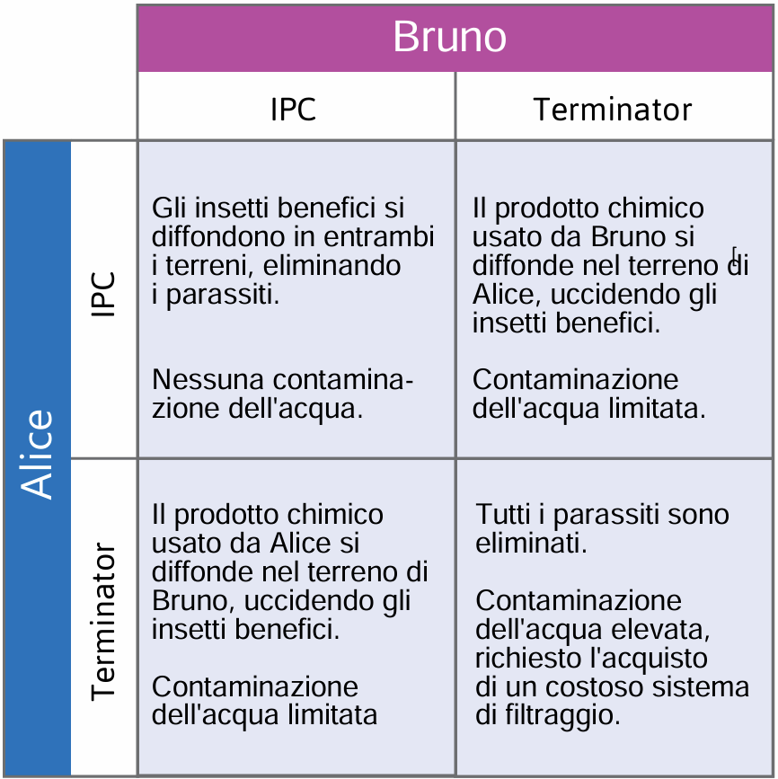
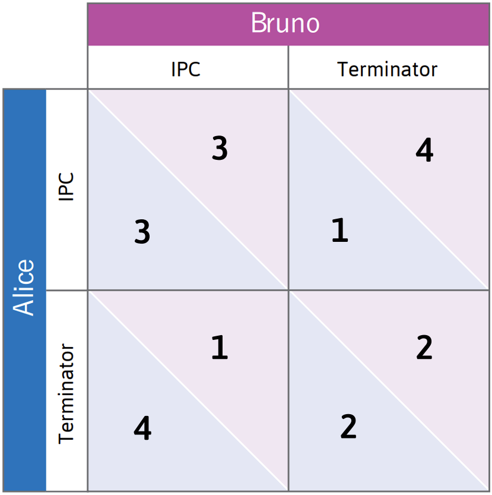
Terminator è la strategia dominante di Alice: è cioè la strategia che le garantisce il payoff maggiore a prescindere dal comportamento di Bruno.
Analogamente, Terminator è la strategia dominante di Bruno.
Siccome l’uso di Terminator è la strategia dominante di entrambi gli agricoltori, è ragionevole prevedere che entrambi si serviranno del pesticida chimico.
L’uso di Terminator da parte di entrambi gli agenti è l’equilibrio in strategie dominanti del gioco.
In equilibrio, Alice e Bruno ricevono ciascuno un payoff pari a 2. Ciascuno sarebbe stato però meglio (ricevendo un payoff pari a 3) se entrambi avessero scelto IPC.
L’equilibrio in strategie dominanti non è l’esito migliore del gioco. Il gioco della disinfestazione è un esempio di dilemma del prigioniero, nel quale il perseguimento dell’interesse individuale ha conseguenze che nessuno gradisce.
Dilemma del prigioniero
Interazione strategica in cui i payoff associati all’equilibrio in strategie dominanti sono più bassi per ciascun giocatore (e quindi sono anche complessivamente più bassi) di quelli che si otterrebbero se i giocatori non scegliessero la strategia dominante.
Se Alice si fosse curata a sufficienza del danno inflitto a Bruno usando Terminator, e se Bruno avesse fatto lo stesso, allora i due non si sarebbero trovati invischiati nel dilemma del prigioniero.
L’altruismo è un esempio di preferenza sociale.
Preferenze altruistiche
Una persona che è disposta a sopportare un costo per contribuire al benessere altrui è animata da preferenze altruistiche.
Molti agricoltori dell’Asia Orientale si affidano a un sistema di irrigazione comune per i propri raccolti. Il sistema richiede una manutenzione costante e frequenti investimenti.
Ogni agricoltore decide in autonomia quanto contribuire alla manutenzione, di cui beneficia l’intera comunità.
Se un singolo agricoltore scegliesse di non contribuire, forse non sarebbe poi la fine del mondo: gli altri potrebbero comunque provvedere alla manutenzione.
Questo è esattamente il tipo di interazione strategica che abbiamo visto nel nostro esperimento!
Supponiamo che l’interazione coinvolga quattro agricoltori.
Per ciascun agricoltore, il costo di contribuire alla manutenzione è $10.
Quando un agricoltore contribuisce, ciascuno dei quattro beneficia di un aumento della resa delle proprie colture grazie all’irrigazione, per un ammontare pari a $8.
Esaminiamo la decisione di Kim, uno dei quattro agricoltori.
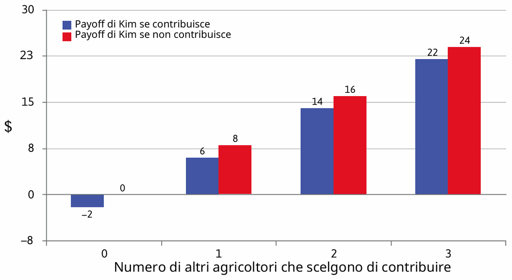
Qualunque cosa decidano di fare gli altri agricoltori, il payoff di Kim è maggiore se non contribuisce che se contribuisce. Non contribuire è la strategia dominante di Kim.
Kim ha quindi un incentivo a fare free riding sulla contribuzione altrui.
Lo stesso vale per ciascuno degli altri agricoltori.
Free rider
Colui che beneficia dal contributo dato da altri individui a un progetto cooperativo, senza però contribuire anch’egli in prima persona.
Il gioco del bene pubblico è un dilemma del prigioniero con più di due giocatori.
Se gli agricoltori si preoccupano solo del proprio tornaconto, allora esiste un equilibrio in strategie dominanti nel quale nessuno contribuisce e ciascuno riceve un payoff pari a zero.
D’altra parte, se tutti contribuissero, ciascuno otterrebbe un payoff pari a \(8 \times 4 - 10 = 22\).
L’altruismo potrebbe aiutare a risolvere il problema del free riding: se Kim si preoccupasse degli altri agricoltori, sarebbe maggiormente propensa a contribuire al bene pubblico.
Tuttavia, quando un’interazione vede coinvolto un gran numero di persone, è improbabile che l’altruismo da solo sia sufficiente a sostenere la cooperazione.
Eppure, in tutto il mondo, agricoltori e pescatori hanno spesso affrontato con successo questo tipo di situazione (Ostrom 2010).
Come è possibile?
Per leggere l’articolo, clicca QUI.
Nel nostro esempio, gli agricoltori interagiscono una volta sola. È però più realistico supporre che l’interazione avvenga ripetutamente nel tempo.
Come tendono a comportarsi le persone che partecipano a un gioco del bene pubblico ripetuto?
Hermann, Thöni, e Gächter (2008) hanno condotto una serie di esperimenti di laboratorio in tutto il mondo, identici a quello che abbiamo svolto in classe.
Per leggere l’articolo, clicca QUI.
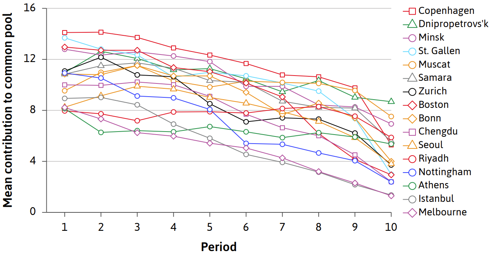
La contribuzione al bene pubblico nel primo periodo è sempre elevata, anche se più in alcune città (Copenaghen) che in altre (Melbourne).
Ciò è indicatore del fatto che le persone non sono puramente auto-interessate.
Tuttavia, in tutte le città la contribuzione decresce nel tempo. Perché?
Domanda: Nello studio di Hermann, Thöni, e Gächter (2008), le contribuzioni descrescono nel tempo in tutte le città. Perché?
Per rispondere (in modo anonimo) puoi:
1969 067.Molte persone sono felici di contribuire al bene pubblico, a patto però che gli altri ricambino.
Un’aspettativa delusa di reciprocità è la ragione più convincente per cui la contribuzione è diminuita così marcatamente nei turni del gioco successivi al primo.
Coloro che inizialmente avevano scelto di cooperare hanno diminuito le proprie contribuzioni se hanno osservato che gli altri si stavano approfittando di loro, così da punire i free rider.
Siccome il payoff dei free rider dipende dal contributo complessivo al bene pubblico, in questo esperimento l’unico modo per punirli consiste nello smettere di contribuire.
Per far luce su questa idea, Hermann, Thöni, e Gächter (2008) hanno modificato l’esperimento introducendo un’opzione punitiva costosa.
In ogni turno, dopo aver osservato il contributo dei membri del proprio gruppo, a ogni soggetto è stata data la possibilità di punire uno o più tra gli altri membri costringendoli a pagare una multa di $3.
La punizione comporta un costo anche per il punitore, pari a $1 per soggetto punito. L’identità del punitore rimane anonima.
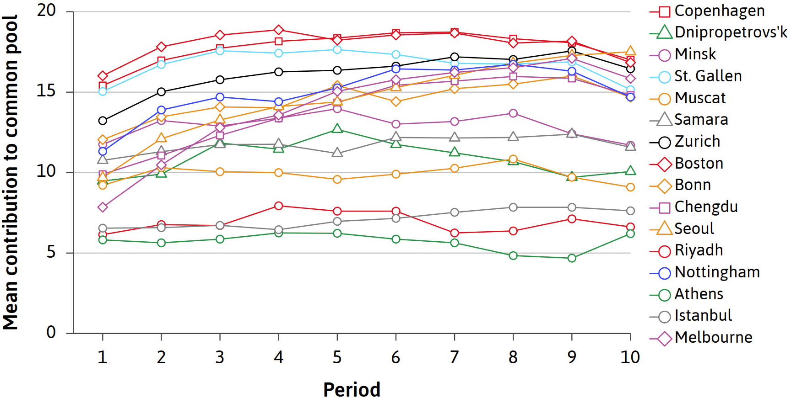
La contribuzione rimane stabile nel tempo!
Intuizione: punire i free rider è una forma di altruismo, perché richiede di sopportare un costo al fine di scoraggiare i comportamenti approfittatori (che sono dannosi per il benessere dell’intero gruppo).
Il messaggio: le persone possono sostenere livelli di cooperazione elevati, a patto che abbiano l’opportunità di punire i free rider quando diventa chiaro chi contribuisce meno degli altri.
I risultati sperimentali ottenuti in laboratorio non sarebbero interessanti se non riflettessero il comportamento delle persone nella vita reale.
Possibili problemi (Levitt e List 2007):
Per leggere l’articolo, clicca QUI.
Fortunatamente, esistono prove che gli esperimenti possono produrre risultati significativi, ossia che i risultati sperimentali godono di validità esterna.
Esempio: Fehr e Leibbrandt (2011) hanno chiesto a un gruppo di pescatori brasiliani di partecipare a un esperimento.
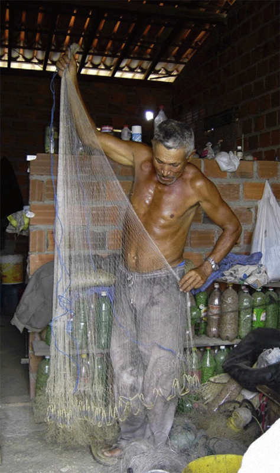
Per leggere l’articolo, clicca QUI.
I gamberi vengono catturati in trappole di plastica simili a secchi.
Sul fondo delle trappole vengono praticati dei fori per consentire ai gamberi non ancora adulti di uscire, preservando così la riserva di gamberi per le catture future.
Praticare fori piccoli permette di catturare più gamberi ma compromette lo stock futuro.
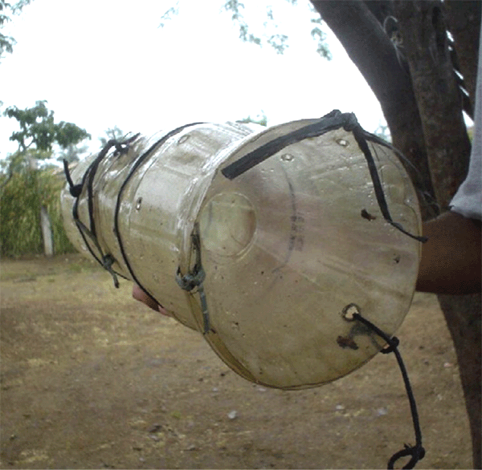
Quello dei pescatori è un dilemma sociale!
Il reddito di ciascun pescatore sarebbe massimizzato se egli praticasse fori piccoli nelle proprie trappole mentre gli altri praticassero fori grandi nelle loro.
Praticare fori piccoli è una forma di defezione e, proprio come nel gioco del bene pubblico, rappresenta la strategia dominante per un individuo auto-interessato.
Un pecatore auto-interessato paticherebbe quindi sempre fori piccoli nelle proprie trappole, a prescindere da ciò che fanno gli altri.
I pescatori potrebbero resistere alla tentazione di defezionare…
Fehr e Leibbrandt (2011) hanno fatto partecipare i pescatori a un gioco del bene pubblico in laboratorio…
…e contemporaneamente hanno misurato in segreto la dimensione dei fori delle loro trappole.
Il comportamento dei pescatori in laboratorio predice il loro comportamento nel mondo reale.
I pescatori che hanno contribuito maggiormente nel gioco del bene pubblico sono quelli che avevano praticato i fori più grandi alle loro trappole.
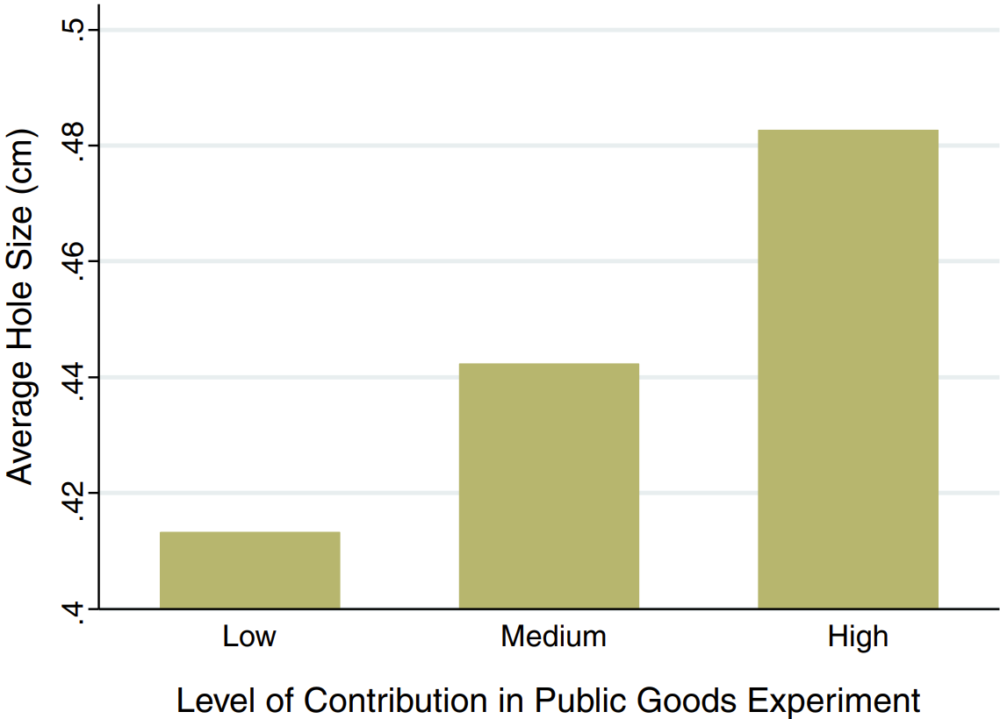
Finora abbiamo parlato solo di forme di punizione dirette, nelle quali gli agenti sopportano un costo per punire chi defeziona.
Le punizioni indirette consistono invece nell’evitare di ricompensare o aiutare chi si comporta in modo egoistico.
Balafoutas, Nikiforakis, e Rockenbach (2014) hanno condotto un esperimento sul campo per studiare i comportamenti punitivi diretti e indiretti adottati dalle persone nella vita di tutti giorni.
Per leggere l’articolo, clicca QUI.
L’esperimento è stato condotto in due stazioni ferroviarie di Colonia (Germania), con l’aiuto di studenti di teatro.
Un gruppo di attrici e attori ha simulato alcune interazioni sociali secondo un copione fisso prestabilito, registrando le reazioni dei passeggeri (detti osservatori) che hanno assistito a queste interazioni.
| Atto 1: violazione della norma | Il trasgressore sporca |
| Atto 2: punizione | Il punitore punisce |
| Atto 3: bisogno di aiuto | Al punitore cadono i libri |
| Azione di interesse | Aiuto al punitore |
| Osservazioni | 108 |
| Atto 1: violazione della norma | - |
| Atto 2: punizione | - |
| Atto 3: bisogno di aiuto | All’attore cadono i libri |
| Azione di interesse | Aiuto all’attore |
| Osservazioni | 131 |
| Atto 1: violazione della norma | Il trasgressore sporca |
| Atto 2: punizione | - |
| Atto 3: bisogno di aiuto | Al trasgressore cadono i libri |
| Azione di interesse | Punizione diretta e/o aiuto al trasgressore |
| Osservazioni | 102 |
| Atto 1: violazione della norma | Il trasgressore sporca |
| Atto 2: punizione | - |
| Atto 3: bisogno di aiuto | - |
| Azione di interesse | Punizione diretta |
| Osservazioni | 106 |
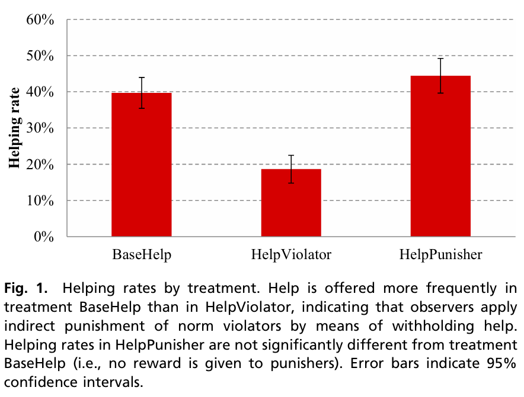
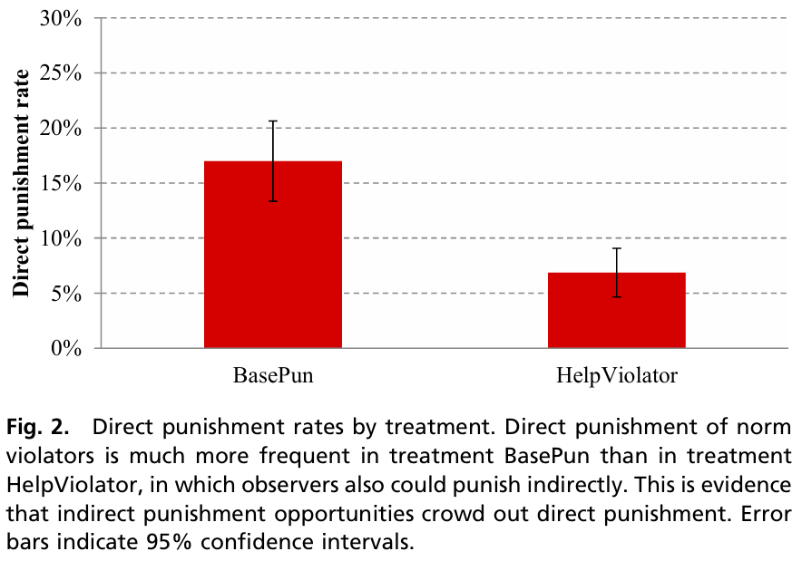
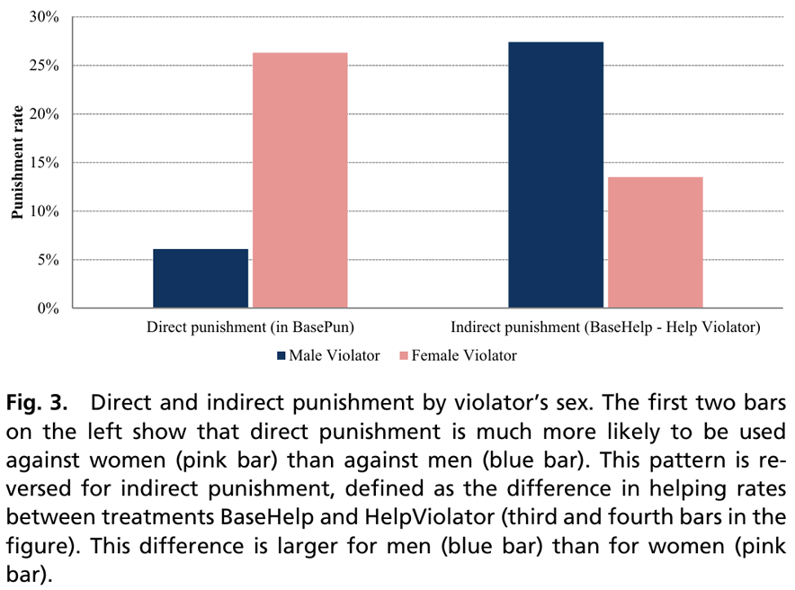
Domanda: Perché le punizioni dirette sono usate principalmente verso le donne mentre quelle indirette verso gli uomini?
Per rispondere (in modo anonimo) puoi:
1969 067.